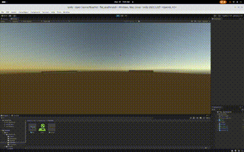

status: open source ricochet
overview:
open source ricochet is a arena-shooter game that takes inspiration from valves game ricochet from 2000. this open-source adaptation invites players to step into a whimsical arena where they can hone their skills in a variety of game modes. with a focus on accessibility and fun.

gamemodes:
free for all
in this mode, users compete against each other to see who can get the highest score. each preson has a set amount of time to score as many points as possible by hitting opponents.
gnu general public license v3.0 | gplv3 is a copyleft license and any modified versions of the software must also be licensed under the gplv3. feel free to use and modify it :3